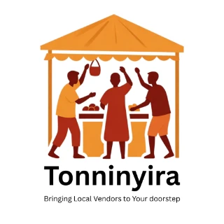
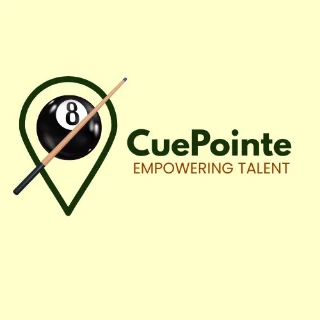

Bringing local vendors to your doorstep. Strategy, interface and code by the same hand — the positioning and the build never got handed between two people.
View the build ↗
github.com/SpeakPower-commits
SpeakPower helps founders, organisations and growing brands turn what they know into a clear story, stronger market visibility and practical digital execution.
You may have a strong product, programme, proposal or personal brand — yet the message still feels scattered, too technical, or hard to act on. We diagnose the gap, rebuild the message around evidence, and stay close enough to execution to make it usable.
Most communication consultants have marketing opinions. I own and run the products — which is why I can tell you what actually moves a market rather than what sounds right in a deck.

Bringing local vendors to your doorstep. Strategy, interface and code by the same hand — the positioning and the build never got handed between two people.

Empowering talent. A marketing agency built around one sport — a narrow market run end to end, not advised from the outside.
Explore the product builds, then see how the same strategic thinking applies to client and organizational work.
SpeakPower is built for leaders who need their message to survive beyond the room where they first said it.
Clarify positioning, pitches, offers and stakeholder narratives before the market decides what your brand means.
Turn programme complexity into donor, community and partner communication that is easier to understand and defend.
Align leadership, sales and customer-facing teams around one message when markets, products or priorities change.
Build a stronger personal brand and public speaking presence without sounding copied from someone else's playbook.
Turn what you know into a clear story, stronger positioning and a message people can understand and remember.
Make the offer easier to find, easier to understand and easier to choose through search and market-facing strategy.
Website copy, SEO writing, thought leadership, articles and content systems that carry the story into the market.
Campaign graphics, presentations, reports and digital visuals that make the message visible and credible.
Use data science, programming and digital tools to turn strategy into evidence, insight and working systems.
Turn expertise into talks, presentations and public-facing communication that people can follow and act on.
SpeakPower connects diagnosis, messaging, delivery and digital execution. The point is not to produce more documents; it is to create a communication system that people can repeat, use and improve.
Start with audience, market, evidence and context before polishing the story.
Global method, grounded in how Ugandan and African audiences actually interpret messages.
When the strategy needs a working digital layer, we can build it rather than lose the intent in a handover.
Explore the systems SpeakPower has designed and built. Case-study details will expand as verified client and product outcomes are documented.
A commerce platform combining customer-facing shopping with operational workflows and digital payments.
View case study →A pool tournament and league concept designed to make participation, talent discovery and event visibility easier to manage.
View case study →Paste a pitch, proposal, positioning statement or grant summary into the Pitch & Document Clarity Audit. Get a measured diagnosis, see what is weakening the message and know what to fix first.
Nothing is uploaded. The analysis runs in your own browser.
Studio is the self-service side of SpeakPower: brand story, SEO, market planning, content, data and speaking tools that generate an output without a meeting.
Turn your expertise into a clear brand story, positioning statement and pitch.
See product →Run an automated Lighthouse-based check of a public website before paying for a larger SEO engagement.
See product →Upload a non-sensitive CSV and get a first-pass analytical story without handing your dataset to us.
See product →Good communication is not only about words. POLSSE asks what changes when a message enters public life, an organization, a regulated environment, a security-sensitive context or people's everyday social and economic reality.
Who has influence, who may challenge the message, and how might it be interpreted beyond the original room?
Can the people inside the organization repeat one clear meaning across leadership, teams and channels?
Are the claims, promises and disclosures ethical, defensible and appropriate to the context?
What happens to the message, the data and the reputation once it is copied, forwarded or taken out of context?
Does the message make sense against people's real incentives, constraints, social conditions and economic choices?
Start with a 15-minute conversation. No long proposal required — just enough context to see whether SpeakPower is the right fit.